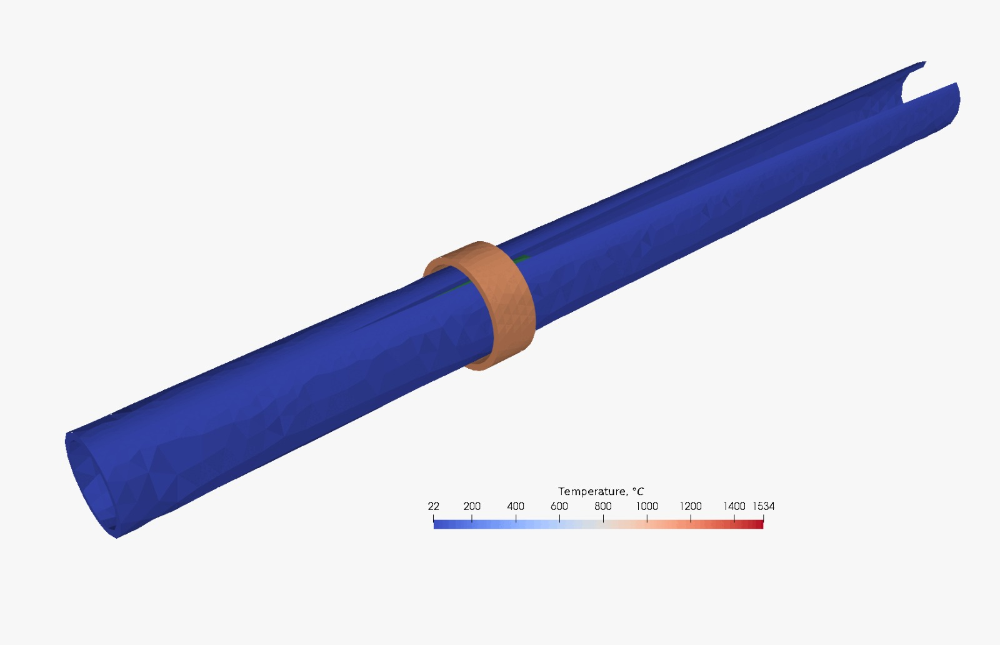

1. Executive Summary & Introduction
High-Frequency Induction (HFI) welding is the backbone of the global tube and pipe manufacturing industry. This project explores electromagnetic induction as a primary joining method, capable of producing high-integrity longitudinal seams at high speeds. By eliminating filler metals and minimizing the Heat Affected Zone (HAZ), the parent metal retains its chemical and mechanical properties.
2. Technical Physics: Skin & Proximity Effects
The efficiency of HFI welding relies on two specific electrical behaviors induced by high-frequency alternating current (150 kHz to 450 kHz):
- The Skin Effect: As frequency increases, current is forced to flow only on the thin outer "skin" of the metal, leading to rapid heating with minimal power loss to the core.
- The Proximity Effect: When the edges of the formed strip approach in a "V" shape, the current naturally concentrates along those meeting edges, maximizing energy efficiency at the weld point.

3. Manufacturing Process Flow
The system comprises key components including the HF Power Supply, Induction Coil, and the Impedor (Ferrite Core) which focuses current on the weld "Vee". The flow follows these critical stages:
- Forming: Steel strip is precisely bent into a round shell via a series of rollers.
- Induction Heating: Edges are heated to a plastic state ($1300^{\circ}C$ to $1450^{\circ}C$) without physical contact.
- Forging: High-precision squeeze rolls bond the edges together, creating a forged weld.
- Sizing/Shaping: Final geometric shaping transforms the round pipe into square or rectangular profiles.
4. Multimedia Demonstrations
The following video demonstration illustrates the HFI principles and the high-speed production environment used in professional manufacturing.
Industrial High-Frequency Induction Welding Process.
5. References (APA 7)
Asahi, H. (2017). High-frequency induction welding of steel pipes. In J. Lawrence (Ed.), Advances in Laser Materials Processing (2nd ed., pp. 581-605). Woodhead Publishing.
Grover, G. S., & Singh, R. (2020). Analysis of heat affected zone in induction welded tubes. International Journal of Modern Manufacturing Technologies, 12(1), 45-52.
Rudnev, V., Loveless, D., & Cook, R. (2017). Handbook of Induction Heating (2nd ed.). CRC Press.
Scott, J. (2018). Principles of High-Frequency Welding. Industrial Press Inc.
Zinn, S., & Semiatin, S. L. (1988). Elements of Induction Heating: Design, Control, and Applications. ASM International.